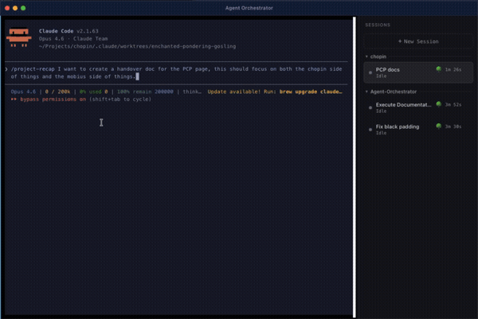
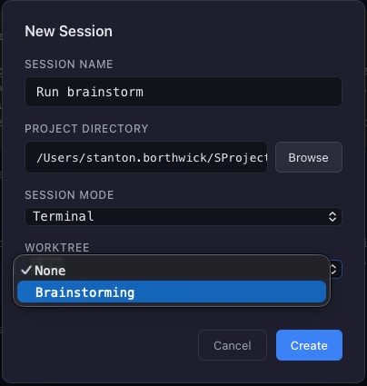
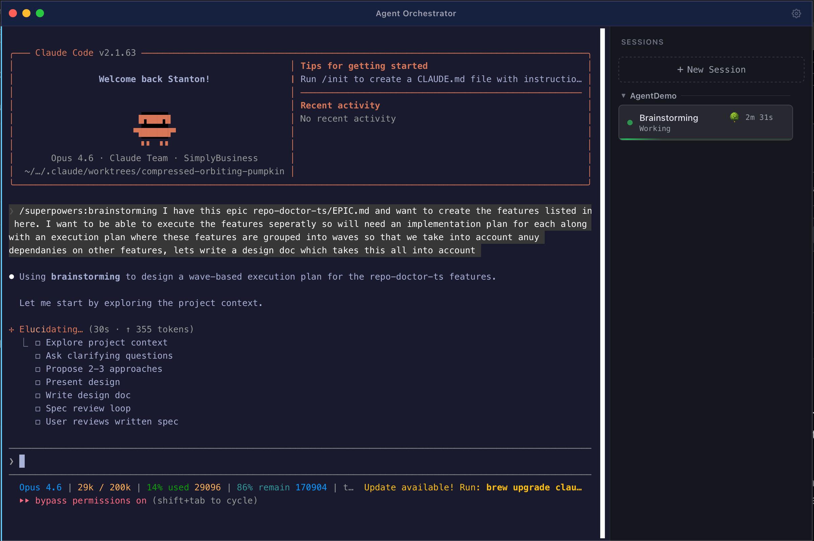
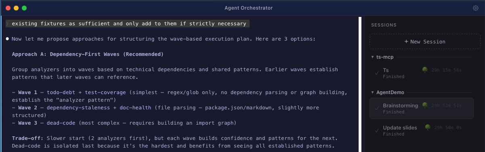

Claude Code user since the closed beta · GitHub Copilot closed beta (2022)
Welcome, introduce yourself. Frame the session: share how you run multiple Claude Code sessions in parallel — what's worked for you, what hasn't, and when the overhead is worth it. Qualify that there may be better approaches and you encourage experimentation.
The scenario
You have 8 features to build.
You open Claude Code.
You do them one at a time.
It takes all day.
Relatable scenario — who has been here?
Sequential execution
Agent 1
F1
F2
F3
F4
F5
F6
F7
F8
~8 hours
This is how I started out — one task at a time, waiting for each to finish before starting the next.
Parallel execution in waves
Wave 1
Agent 1
F1
Agent 2
F2
Agent 3
F3
Agent 4
F4
merge → review →
Wave 2
Agent 1
F5
Agent 2
F6
Agent 3
F7
Agent 4
F8
merge → done
~2 hours (2 waves × 4 agents)
The idea: batch independent tasks into waves — run a wave, merge, review, then launch the next. In practice the speedup depends on how cleanly tasks separate. We'll dig into the trade-offs.
What if you could run 5 agents at once, each in its own isolated branch, and merge them all?
1
2
3
4
5
→
git merge ✓
Next 20 minutes: worktrees → agents → hooks
Set the agenda. Acknowledge this sounds ideal — the rest of the talk covers the mechanics AND the constraints that determine when this actually pays off.
Worktrees: The Foundation
Transition — now let's understand the key primitive.
What is a git worktree?
.git One repo
|
main/ Working dir
|
feature-a/ Working dir
|
feature-b/ Working dir
One repo. Multiple checkouts. Each with its own branch.
Git worktrees have been around since Git 2.5 (2015). Most people don't know they exist.
Why worktrees matter for agents
Without worktrees
Agents fight over the same files
Branch switching chaos
Uncommitted changes get trampled
One agent at a time
With worktrees
Each agent has its own copy
Zero file conflicts
Parallel work is safe
Merge when done
The key insight: isolation is what makes parallelism safe.
Easiest two ways to get a worktree
My preference
Claude CLI
claude--worktree
One flag, instant worktree
Agent starts in its own branch
Minimal setup, maximum speed
Skills / Plugins
# e.g. using-git-worktrees skill/worktree
Skills can automate worktree creation
Custom hooks for setup & cleanup
Good for team-wide conventions
Both work great — claude --worktree is the fastest path to get going
Two options: the CLI flag is the simplest and my personal go-to. Skills and plugins can also generate worktrees with more customisation — useful if your team has specific branch naming or setup conventions. Either way, it's just git under the hood.
Agent Orchestrator
You'll see me using this throughout the demo — it's an infosec-approved tool I built to manage parallel workflows. Each session is a worktree.
WorkingAgent is actively coding
IdleWaiting for input
Needs AttentionAgent is stuck or has a question
FinishedReady for review
ErrorSomething went wrong

Status monitoring • One-click terminal into any worktree • Session management
Interested? Join #agent-orchestrator-open-beta on Slack to learn more.
Quick intro to the tool they'll see in demos. Infosec approved, built to manage worktree-based workflows. Each session is a worktree with status tracking and easy terminal access. Point people to #agent-orchestrator-open-beta on Slack if they want to try it out or learn more.
If the demo didn't work or was too fast, this is the reference.
Key takeaway
Worktree = isolated branch + working directory
Each agent gets its own sandbox
Create a PR, review, then merge — just like a feature branch
Make sure this is crystal clear before moving on.
Worktree gotchas
You're not on main
If you yarn dev or npm start, make sure you've cd'd into the worktree directory — otherwise you'll be running from main and wondering where your changes went.
.gitignore'd files aren't copied
Files like .env won't exist in the worktree. Copy them manually or use symlinks.
cp .env .claude/worktrees/<name>/.env

Two common surprises when starting with worktrees. Worth flagging before the hands-on so people don't lose time debugging.
Parallel Workflows
Now we combine worktrees with multiple agents.
Init a Claude session per worktree & execute plan
1
Decompose work into independent tasks
2
Create a worktree per task
3
Init a Claude session in each worktree with its plan
4
Monitor progress
5
Review and merge

Each worktree gets its own Claude session with a specific plan to execute. This is the workflow you'll practice in the hands-on session.
Tasks MUST be independent
If Feature B depends on Feature A's output, they can't run in parallel
A
B
Parallel OK
A
→
B
Must be sequential

Tip: Claude's brainstorming mode is great at figuring out how to decompose tasks and identify dependencies
This is the most common mistake. Spend time on decomposition. Claude's brainstorming mode can help identify which tasks are truly independent.
Completing a worktree
Two ways to land your work
Option A — Create PR from worktree Recommended
# Inside the worktree, ask Claude:>"Create a PR for this work"# Claude will:# 1. Commit & push the branch# 2. Open a PR with summary + test plan# 3. Return the PR URL
Option B — Direct merge to main
# 1. Switch to maincd /path/to/project
git checkout main
# 2. Merge the worktree branchgitmerge worktree-clever-fox-123
# 3. Clean upgit worktree remove .claude/worktrees/clever-fox-123
Not available at SB — branch protection rules require PRs for all merges to main.
Why no conflicts? Each agent worked on different files in its own directory. Independent work = clean merges.
Show both paths. PRs are better for team workflows with review. Direct merge is faster for solo work.
The full picture
This is what your git history looks like when you work this way.
Common pitfalls
⚠
Don't edit shared files across worktrees
Shared config, types, or entry points edited by multiple agents = merge conflicts. Give each agent its own files.
⏰
Start hard tasks first
Complex features need more wall-clock time. Launch them in Wave 1 so they run while you tackle easier tasks.
🔍
Review before merging
Agents make mistakes too. Treat each worktree branch like a PR — read the diff, run the tests, then merge.
Quick hits before we move to agent teams.
Agent Teams & When to Use What
Final concept section before the workshop.
What are agent teams?
Claude Code coordinates a team lead + teammates
Team Lead Creates tasks, coordinates
↓
Teammate 1 Own context
Teammate 2 Own context
Teammate 3 Own context
↓
Shared Task List + Mailboxes
Another approach I've experimented with — Claude Code can manage coordination between agents. Useful in some scenarios, though I still prefer manual worktrees for most implementation work.
Subagents vs Agent Teams
Subagents
Agent Teams
Context
Own window; results return to caller
Own window; fully independent
Communication
Report back to main agent only
Teammates message each other directly
Coordination
Main agent manages all work
Shared task list with self-coordination
Best for
Focused tasks — only the result matters
Complex work requiring collaboration
Token cost
Lower
Higher
Use subagents when you just need a result. Use agent teams when agents need to talk.
Architecture comparison
Subagent Model
Parent
↓ dispatch ↓
Child 1
Child 2
↑ result ↑
Agent Team Model
Lead
↔ messages ↔
T1
T2
↓
Shared Tasks
Visual reinforcement of the table.
My honest take
I use agent teams to execute implementation plans quicker
Give the lead agent a plan → it decomposes, delegates, and coordinates
Teammates work in parallel on different parts of the plan
For larger cross-feature work → worktrees give you more control
Agent teams are my go-to for executing plans within a single feature. For bigger cross-feature work, worktrees give more control.
Where agent teams struggle
Cross-feature orchestration
Teams work well within one feature, but coordinating across multiple features with dependencies is hard.
No session resumption
If you close the session, in-process teammates are lost. You can't pick up where you left off.
Task status lag
The shared task list doesn't always reflect real-time progress. Teammates may duplicate work.
One team at a time
You can't run multiple teams in parallel. For that, use worktrees with separate sessions.
Still experimental — expect rough edges
Don't oversell. These are real limitations.
Best practices
3-5 teammates — sweet spot for coordination
5-6 tasks per teammate — enough to stay busy
Each teammate owns different files — avoid conflicts
Start with research/review — build confidence first
Quick practical tips if they want to try agent teams after this session.
For higher-level orchestration
Want multi-feature orchestration? These frameworks go beyond what we cover today:
GastownMulti-agent orchestration across repos. Coordinates feature-level work with cross-repo dependencies.
CitadelDependency-aware task scheduling. Knows which tasks block others and sequences them automatically.
Mission ControlHigher-level orchestration layer that manages agent teams across multiple features and projects.
Pointer for self-study. We won't cover these today.
The spectrum
Single Agent
Simple tasks
YOU ARE HERE
Worktrees + Parallel Sessions
Today's focus
Agent Teams
Planning acceleration
Full Orchestration
Gastown / Citadel / MC
Position what we've covered on the spectrum. The worktree approach in the middle is where I spend most of my time — it's the sweet spot for my workflow.
Hooks: Automate & Enforce
The new pillar. Worktrees and agents are about parallelism; hooks are about making each session automatically do the right thing.
What is a hook?
Claude Code runs your shell command at lifecycle events.
A hook can observe, inject context, or block an action.
The simplest mental model: at certain moments, Claude shells out to a script you control, hands it JSON, and reacts to what the script says.
The event lifecycle
Event
Use it to…
PreToolUse
Gate or deny a tool before it runs
PostToolUse
React after a tool — format, lint, verify
UserPromptSubmit
Inspect / augment a prompt
Notification
Surface "needs you" to your environment
Stop / SubagentStop
Act when a session / subagent finishes
SessionStart / SessionEnd
Prime context / clean up
There are more events than this; these are the ones worth knowing first. Today's demo uses PostToolUse and SessionStart.
The contract
# stdin: the event as JSON
{ "hook_event_name": "PostToolUse",
"tool_name": "Edit",
"tool_input": { "file_path": "src/app.ts" } }
# control by exit code…
exit 0 # proceed
exit 2 # PreToolUse: block + show stderr to Claude# …or by JSON on stdout
{ "hookSpecificOutput": { "additionalContext": "…" } }
Registered in settings.json as event → matcher → command
Two ways to talk back: exit codes for allow/block, JSON on stdout for richer control like adding context.
You've already seen one
The Agent Orchestrator status you watched all session is driven by a hook.
# ~/.claude/settings.json (simplified)"Notification", "Stop", "PreToolUse"
→ agent-orchestrator-notify.sh
→ POST session status to a local server
A handful of lines of bash. That's the whole trick.
Tie it back to the orchestrator demo from earlier. The "magic" status updates are just a Stop/Notification/PreToolUse hook POSTing to a local endpoint.
Gotchas & safety
Hooks run arbitrary commands with your credentials — review before wiring one in
They fire on every matching event — keep them fast
Scope the matcher tightly so they only run when relevant
Test against a sample payload before keeping one
The upside: hooks turn soft policy ("don't commit secrets") into hard enforcement.
Be honest about the risk: a hook is code that runs automatically with your access. The payoff is real enforcement — exactly what we'll build next.
Questions?
Before we jump into the hands-on session
5 min buffer. Take questions. If no questions, use the time to let people set up early.
Let's put this into practice
You'll build 3 Claude Code hooks in parallel worktrees
3
Hooks to build
3
Parallel worktrees
✓
Keep what you like
Bridge to the hands-on section. The numbers give a quick sense of scope.
What you're building
Three independent hooks, each its own self-contained script file
format-on-save — PostToolUse: format the file Claude just edited
codacy-analyze-on-save — PostToolUse: run Codacy on the edited file, surface issues back to Claude
Independent files → clean parallel work; keep the ones you like
Quick preview of what they'll build.
Quick start
git clone https://github.com/stantonSB/AgentDemo.git
cd AgentDemo/claude-hooks-workshop
bash test/run-tests.sh # scaffold sanity checkcat test/payloads/pretooluse-bash.json | hooks/tool-logger.sh # try the example
What you'll see: The worked-example hook (tool-logger) appends tool invocations to a log. Read EPIC.md to see the three hooks you'll build.
jq ✓codacy-cli ✓Claude Code v2.1.32+ ✓
This is what they do in the first 10 minutes. The prerequisite badges remind them what they need installed.
Plan before you build
1.Brainstorm — decompose the EPIC into parallel features
>"Read EPIC.md and brainstorm how to split the work into parallel features"
2.Create plans — write an implementation plan for each feature
>"Write an implementation plan for the format-on-save hook"
3.Review plans — merge plan PRs to main, review before implementing
Pro tip: Ask Claude to generate an implementation prompt for each plan. Once plans are merged to main, copy those prompts into fresh sessions with claude --worktree to kick off parallel agent teams.
Planning phase is critical — brainstorm the decomposition, write plans, review them, then hand off to parallel agents. The prompt-copy trick avoids context pollution between planning and implementation.
Go build.
Read EPIC.md. Build 3 hooks in parallel. Keep what you like.